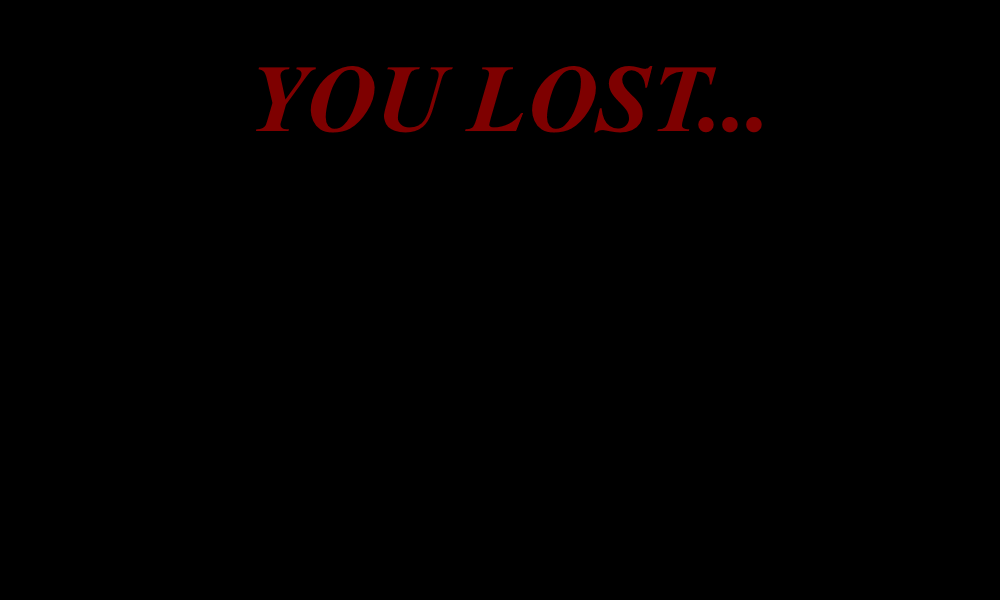
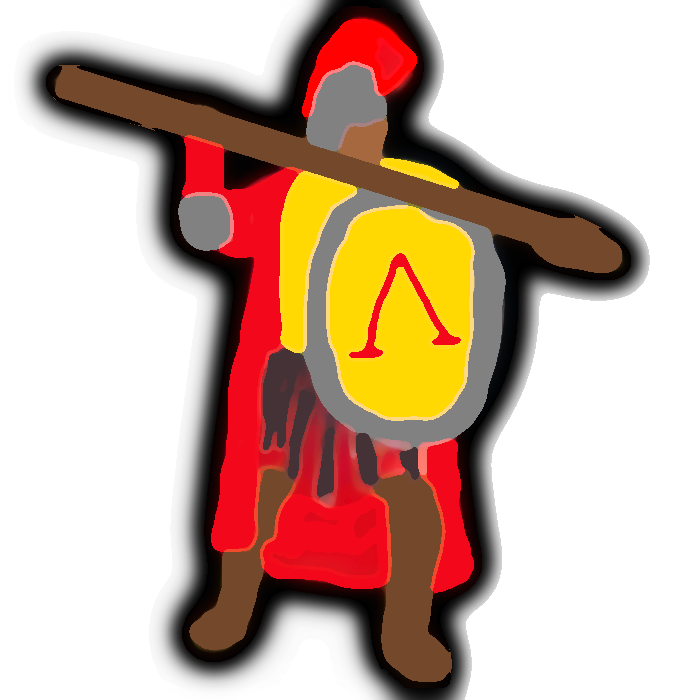
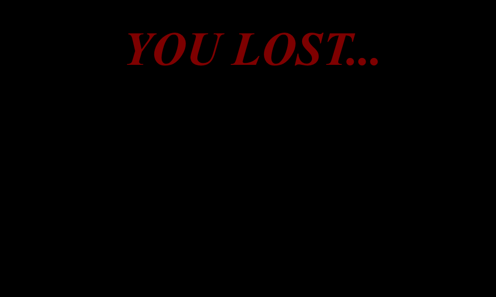
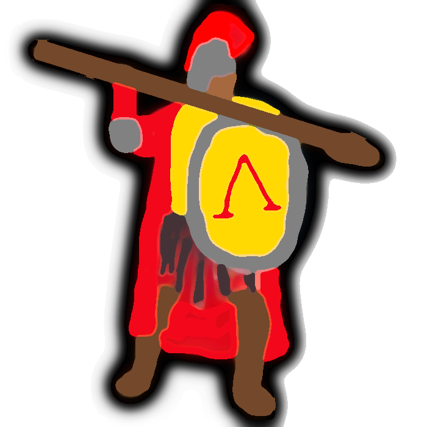

By Ssolbergj [CC BY 3.0], via Wikimedia Commons
{kind=link}
About the fall of Rome...
One of the most greatest strengths of Rome was their ability to conquer. Not only was it their key strength, but the expansion of Rome was a great source of income. However, as well all know, this addiction to expansion led to the eventual downfall of Rome. Throughout Rome's history, they were always constantly expanding. At their peak, they had covered over 4 million square miles of land. One of the main problems with owning this much land, however, was that they had to pay more soldiers to protect the land. In order to pay the soldiers, the currency was devalued and caused inflation. On top of the internal issues of the government, the Romans had a bigger issue: the Barbarians. As they took land, the people of these particular lands didn't like their laws or taxes. Therefore, rebellions after rebellions occured. To continue on the economic side of all of this, Rome was so big it was hard to manage the necessities of life. As more money went into the military, Rome was not able to keep up with the management of food, supplies, shelter, and more. Even with their complicated road system that offered a quicker path to certain destinations didn't seem to do the trick quick enough. All in all, Rome's downfall was simply because of their overexpansion. They wanted a large army and would do anything to keep it the biggest, but in the end they didn't have enough money to keep the government going.
How To Play
The objective of the game is to take as many castles as you can and increase the Roman military before Rome collapses. Your score can be seen on the top right of the screen. To move, you simply press the WASD or arrow keys to move in the direction respectively. You can die in two ways: by leaving Europe (evacuating the map), or by attacking your own soldiers (running into yourself). To start the game, press the big red button above the game simulation.
By Tataryn (Own work) [CC BY-SA 3.0], via Wikimedia Commons
{kind=link}
 


